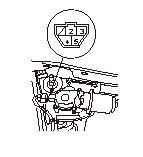
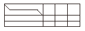
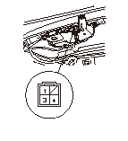

ワイパ モータの点検
フロント
ワイパ アームおよびカウル トップを取外す。
ワイパ モータ（A）から5Pカプラ（B）の接続を外す。

各端子間にバッテリ電圧を与えたとき、モータが異音なくスムーズに回転することを点検する。
モータに異常があり、スムーズに回転しない場合はモータを交換する。
No.2とNo.4端子間
モータ回転中に導通の有無を繰返すことを確認する。
•
アナログ テスタを使用する。
•
ワイパ アームを取付ける前に、ワイパ モータを作動させ自動停止位置にしておくこと。

リヤ
DTCがなくリヤ ワイパ作動に不具合があるときは、先にリヤ ワイパ モータのアース回路の点検をする。
テールゲートを開け、テールゲート ロア ライニングを取外す。
リヤ ワイパ モータ（A）から4Pカプラ（B）の接続を外す。
No.1端子にバッテリの（＋）を、No.3端子に（－）を接続し、モータが異常なくスムーズに回転することを点検する。
モータに異常があり、スムーズに回転しない場合はモータを交換する。
No.3とNo.4端子間
モータ回転中に導通の有無を繰返すことを確認する。
•
アナログ テスタを使用する。
•
リヤ ワイパ アームを取付ける前に、ワイパ モータを作動させ自動停止位置にしておくこと。

 モータに異常があり、スムーズに回転しない場合はモータを交換する。
モータに異常があり、スムーズに回転しない場合はモータを交換する。
モータに異常があり、スムーズに回転しない場合はモータを交換する。
モータに異常があり、スムーズに回転しない場合はモータを交換する。